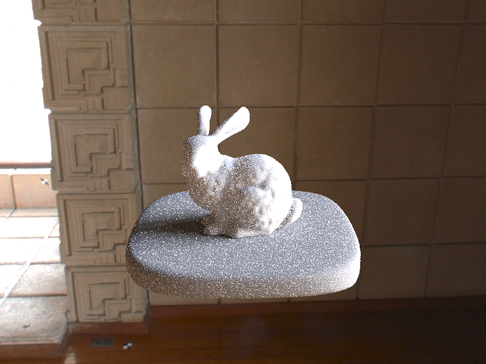

In this project, I extended the path tracer created in part 1 to support several new features, including material modeling, environment lighting, and depth of field, using importance sampling to increase the rate at which pixels converge.
The specific material BSDFs added were glass, mirrors, and microfacet materials. Mirror materials were relatively straightforward, requiring just a reflection to sample directions. Glass and microfacet materials required more care, dealing with refraction through Snell's Law and Fresnel Terms. Importance sampling was implemented for microfacet BSDF to better accomidate the Bleckman NDF used to describe the normal distribution of the material, allowing faster convergence over normal cosine hemisphere sampling.
Environment Lighting, a light source that provides radiance from all directions in the sphere, was also implemented, allowing the realistic rendering of objects placed in an environment. To do this, we take samples over the environement light, using importance sampling to again allow for faster pixel convergence over uniformly sampling over the sphere.
Finally I was able to simulate depth of field by implementing a thin lens model to replace our pinhole camera model. Now, sampling over the lens' surface, we can create realistic camera effects, putting objects into focus and blurring others, able to fine tune both the focal distance and aperture radius of our lens.
Here I implemented the BSDFs for glass and mirror materials. For mirror materials, when sampling an incoming ray
direction, we simply reflect the outgoing ray direction over the surface normal using the equation *wi =
Vector3D(-wo[0], -wo[1], wo[2]), knowing that in object coordinates the normal is just Vector3D(0,
0, 1). Because a perfect mirror will always direct light in that direction, so our pdf for the sample
is simple 1. Additionally, we also had to account for the fact that perfect mirrors aren't affected by
Lambertian fallout, dividing by a cosine term to cancel the multiplication by the cosine term for the Lambertian
falloff.
Glass materials were slightly trickier. Using snell's law, we can figure out which direction a ray should bend
upon being refracted given the index of refraction for the material as well as knowing whether or not the ray is
leaving the material or entering. If total internal reflection does not occur, then we know a given ray will
both be reflected and refracted. To account for this when sampling, we use Schlick's Approximation to give us a
probability of refracting (simplifying the Fresnel Reflection model given by the Fresnel Equations). The following renderings were crated with s = 1024, l = 4
m = 0 |
With |
m = 1 |
Allowing for one bounce allows us to view the mirror surface of the left sphere as now camera rays hitting the surface will be reflected and take the value of the location they hit. We also see this reflective effect on the glass sphere, most obviously at the top, though no refraction yet as the camera rays require another internal bounce before they can find a surface to sample. As in part 1, we also begin observing more soft shadows and color bleeding effects with a single bounce. |
m = 2 |
Now having two bounces, camera rays hitting the surface of the glass sphere can be refracted once into the sphere and refracted a second time to escape the sphere, now able to sample a surface, modeling the glass material. The reflection of the glass sphere is still dark however as camera rays use up a bounce reflecting off the mirror sphere, requiring a third bounce to escape the glass sphere. We can however now see the reflected light off the glass sphere in the mirror sphere as the reflection only requires a single bounce. |
m = 3 |
The most noticible change here comes from the light now shining through the glass sphere and focused on the floor beneath it. This is because now with another additional bounce, we can see light that indirectly reaches the camera after being refracted in the glass sphere, whereas before we could only measure light leaving the glass sphere to the camera directly. In addition, we can now see the glass sphere's reflection for the reasons highlighted before, however we still lag one behind the actual scene as we can't yet see the focused light on the floor reflected, a bounce having been used up on the reflection. |
m = 4 |
Now the focused light on the floor's reflection can be seen in the mirror sphere. Additionally, we notice a second beam of light being focused on the blue wall, originating from light reflected from the mirror sphere, being refracted upon entry to the glass sphere, being refracted upon exit of the glass sphere, and bouncing off the blue wall to the camera, requiring 4 bounces to be seen. |
m = 5 |
There is little change between steps 4 and 5 as the scene begins to converge. |
m = 100 |
Again there is very little change between a max depth of 5 and 100, the most noticeable difference being the additional subtle reflection of light off the top of the sphere. |
Because much of this part was just transferring mathematical equations to code, I often found myself making minor syntax errors like missing a negative sign or forgetting the order of operations. These lead to quite a few headaches in debugging, but slowly and rigorously reviewing the code I had written squashed out all the bugs in a reasonable time.
In Part 2, I implemented an additional BSDF for the Microfacet model. This allows us to render realistic isotrophic conductors with variable roughness about them, giving a metallic sheen. The BSDF for a microfacet material consists of many separate parts, the onces concerning us being a Fresnel term describing air-conductor interactions, and a Normal Distribution Function describing how the material's normal vectors are distributed (here we use the Beckmann distribution). Again, the majority of this part consisted of translating equations into code.
Below we have renderings of the gold, microfacet materialed CBdragon_microfacet_au.dae. These were
rendered with 256 samples per pixel, 1 light sample, and a max ray depth of 5. We vary alpha(a),
the roughness of the material.
a = 0.005 |
a = 0.05 |
a = 0.25 |
a = 0.5 |
As alpha increases, we see that the material looks increasingly rough. At a = 0.005, the material
looks very reflective and polished, with almost a liquid quality, though does not seem to reflect much of the
area light overhead however. As we move to a = 0.05, we see that the area light's influence is much
more visible. While still very reflective, the dragon now looks slightly rougher, not as slick as the previous.
When we cross to a = 0.25, the roughness is very apparent now. Most of the reflective qualities
from before are gone, replaced by a golden sheen all over the body of the dragon. The effect is even more
apparent at a = 0.5 where now essentially no clear reflections can be seen, the dragon now just
looking like a rough metal.
To speed up the convergence of the image, I implemented importance sampling according to the Beckmann
distribution alluded to above. To do so, I just evaluated the probability of sampling a given solid angle wi
using the provided probability distributions for the Beckmann NDF. The effects against normal cosine hemisphere
sampling are illustrated below (s-64, l=1, m=5):
|
|
|
With cosine sampling, it is easy to see that values have not yet converged, many black regions dotting the bunny. In the render using importance sampling, we see that will the same number of samples, we get significantly less noise, especially on the body of the bunny, the values much closer to convergence with the same number of samples. We end up with a smooth, copper bunny. Although cosine hemisphere sampling will eventually converge to the correct image, it is clear to see that importance sampling provides a much quicker path to our desired rendered image.
Below, I demonstrate other a few examples of other conductors that may be rendered using the Microfacet model,
simply by changing their refractive indicies (eta) and extinction coefficients (k).
All renders were performed with s= = 256, l = 1, m = 5.
| Provided Gold Conductor |
Cobalt Conductor, eta = <2.1849, 2.0500, 1.7925>, k = <4.0971, 3.8200, 3.3775>
|
Platinum Conductor, eta = <0.46138, 0.46608, 0.58870>, k = <5.9022, 5.0942, 3.9742>
|
Chromium Conductor, eta = <3.1743, 3.18, 2.465>, k = <3.33, 3.33, 3.215>
|
I remember I experienced an extremely frustrating error for quite some time where my conductor would be much too
noisy. Again the problem stemmed from forgetting a 2 term when dividing by PI, throwing off the pdf's
used in the importance sampling.
In part 3, I implemented support for environment lighting, where radiance can be supplied from all directions in the sphere. We simply sample a vector from the sphere over the desired environment image, using importance sampling to reduce noise, and take the sampled value as our radiance. Below we have the jpeg and probability debug output for field.exr:
Using importance sampling, we can reduce the amount of noise we get, allowing pixels to converge more quickly. The differences between uniform sampling and importance sampling can be seen below:
bunny_unlit.dae |
bunny_unlit.dae |
bunny_microfacet_cu_unlit.dae |
bunny_microfacet_cu_unlit.dae |
For this exr, it is a bit difficult to notice difference, but if we look closely at the pedestal in both the microfacet and diffuse bunny, there is slightly more variation in the spectra of the uniformly sampled image, especially near the base of the bunny in the microfacet image. The effect can be seen even more clearly using ennis.exr:
bunny_unlit.dae |

bunny_unlit.dae |
bunny_microfacet_cu_unlit.dae |
bunny_microfacet_cu_unlit.dae |
Now it is much more clear the reduction in noise between the two sampling methods. In the pedestals, we see many more white dots present in the uniform sampling method over the importance sampling method. The difference is also easily seen in the shadows of the two images. With importance sampling, we see a much more realistic soft shadow for the bunny, while with uniform sampling, we have a harsh transition, the pixels not yet having sampled the lit portions of the environment light enough time to reflect the softness.
In the bunnies themselves, we see in the non-microfacet model that the shadows on the bunny are also much more well defined with importance sampling, the roughness on the model easier to see whereas the pixels on the uniformly sampled bunny have yet to converge fully, some of these shadows not showing up at all. In the microfacet model, we see that there is much less reflected noise coming form the pedestal, although we see an increase of noise in the form of bright, copper colored specs on the bunny itself.
Overall it is clear to see that importance sampling has greatly reduced the noise in the image using the same number of light samples as uniform sampling. I'm still not entirely sure if the noise in the second image is a bug or simply due to pixels reflecting smaller features in the specific environment light that the uniform sampling could not allow pixels to come near to converging to like the brown ceiling beams or yellow tiles near the window. Having checked every division for 0 errors, correcting the probability distribution, checking array access indices and so on, if it is a bug, I suspect it may stem from a different portion of the project or some minor equation that I've copied wrong, though seeing how the issue has not appeared in any other microfacet model or the other exr's I have rendered, I'm slightly inclined to entertain the possibility that the image is correct. Either way, after sinking an enourmous amount of time into fixing it, I have decided to just accept the bunny as it is, still clearly illustrating the superiority of importance sampling in reducing noise.
In part 4, I added the ability for the pathtracer to model the effect of placing a thin lens infront of our old camera, allowing the pathtracer to put objects in focus. With the lens, now the light contributing to the value of a pixel no longer must come from a ray through the center of the lens, rather it can receive radiance from any point on the thin lens, meaning we must now sample over the lens as well. From here, we can just leverage the fact that the any point on the focus plane will map onto a single point on the image plane, using a ray passing through the center of the lens to calculate this point as we know this ray will not change direction upon passing through the lens.
The results can be seen in the image below, taken with s = 256, l = 4, m = 8, an aperture radius of
0.0883883, and my platinum dragon:
focal_distance = 1.4 |
focal_distance = 1.5 |
focal_distance = 1.7 |
focal_distance = 1.9 |
We can observe that as the focal distance increases, the focal plane moves further into the scene.
We can also vary the aperture size. The following renders were done with the same settings as before, using a focal distance of 1.4:
aperture_size = 0.25 |
aperture_size = 0.15 |
aperture_size = 0.0883883 |
aperture_size = 0.031250 |
We can easily see that as the aperture size decreases, the circles of confusion become smaller as the acceptable depth of view increases. As the aperture radius nears 0, more and more of the image becomes in focus. At a radius of 0, the model then is the same as a pinhole camera, which is what we had before.